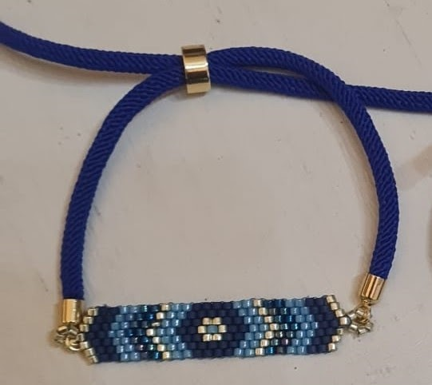

Joyas artesanas hechas a mano con delicadas cuentas de Miyuki.
Pulsera tejida a mano con cuentas Miyuki originales.
18€
"Sé más, sé única".
BeMore es una marca de joyería artesanal creada por dos amigas apasionadas por el diseño y las manualidades. Abalorios únicos hechos a mano con delicadas cuentas de Miyuki.
¿Te interesa alguna de nuestras joyas? Escríbenos: